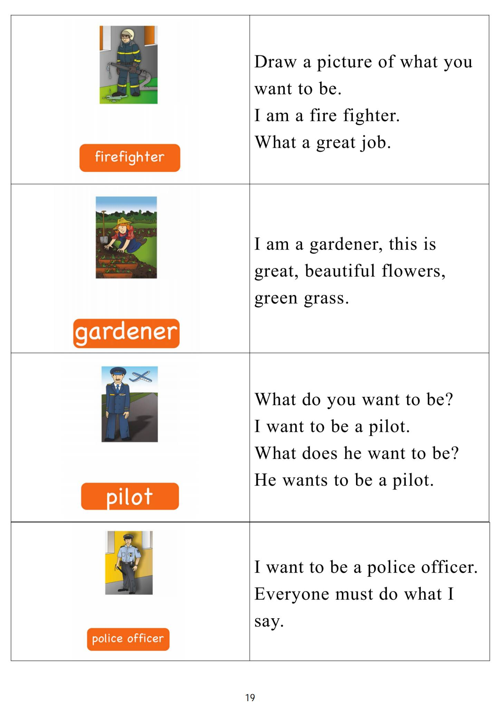

Day 18
Unit 6 · story
教材重点
网盘未提供逐日打卡原图；本级教材文件为“5.第五级单词卡.pdf”，以下重点结合单词卡与台词本整理，原文请看 Part 3。
Unit 6 · story · 7–8岁
can · time · hungry · say
Hello, hello, my name's Steve.
台词本为机器转写，可能存在识别误差；不等同于视频逐字原声。
详细内容
Part 1 核心词汇
必须掌握 · 4 个查看橙色每日打卡 Day 18 原图

Part 2 跟读句型与句型拓展
左侧保留台词本原句，右侧为替换练习；拓展内容不是视频逐字台词。
Hello, hello, my name's Steve.
So it's time to play. It's time to play in English.
Dinner and supper.
Oh, ah, the sun's coming up.
Oh good morning, boys and girls, it's time for breakfast here.
Part 3 台词本全文
来源：第5级台词本 · 018.Wow!Orange - Unit 6 story_6_1a.pdf。以下保留网盘 PDF 的机器转写文本，仅清理了文件路径页眉和空行。
Hello, hello, my name's Steve.
So it's time to play. It's time to play in English.
Breakfast, snack, lunch,
Dinner and supper.
Oh, ah, the sun's coming up.
Oh good morning, boys and girls, it's time for breakfast here.
It's Saturday today, no school, I can have my breakfast slowly.
Hey, say with me and pat your tummy, say, I can have breakfast. I can have breakfast.
I can have breakfast here, I love breakfast. You can't have breakfast. I.
Can have breakfast. You can't have breakfast. Your bedrooms messy.
There are socks on the carpet and pants on the bed, tidy your room, OK, ma'am, put it, maggie, I'll go
and tidy my bedroom.
Oh,
Singer.
I'm looking for.
Singer.
I finished, OK, I'll just have a little rest.
No,
Oh dear, oh, I fell asleep. Oh, oh, I'm hungry.
Hey, I can have breakfast.
Oh no, look, the sun's up.
And it's not breakfast time any more, no, but I can have a snack here. It's snack time.
Oh, look at all these delicious snacks.
I can have a snack, hey say with me, I can have a snack, and again, I can have a snack. What a time I
can have a snack.
Yeah, you can't have a snack. Yes. I can have a snack, no, you can't have a snack, yes, I can.
Have a snack, you can't. The living room is messy.
There's a toy train under the table, a boat by the TV.
And toy cars are the South, okay? Maggie, I'll go and tidy the living room, then I can have a snack.
Here we go.
Oh, hey, oh, I really like this. How great.
/
-
/5/018.Wow!Orange - Unit 6 story_6_1a.txt[2022/3/29
星期二
6:51:50]
That was great, oh and hey, I forgot to have a snack, oh, and look, it's too late for a snack. Now.
It's lunchtime, oh, great, I can have lunch, yeah?
I'm hungry. It's lunchtime, I'm hungry, it's lunchtime. Hey, oh, lunch, great.
I can have lunch. You can't have lunch, yes, maggie, I can have lunch.
You can't have lunch, say with me, I can have lunch. You can't have now. I can have lunch now.
Oh, why, there's a problem in the base battle. No.
What's the problem in the basement? Oh, oh, oh, oh, no.
This is a big problem bigger than I thought, oh, this will take a long time.
Poor finished, wow, I'm really hungry Now.
How, but look, the sun is going down, it's not lunch time, no, it's dinner time.
But hey,
Dinner is bigger than lunch, so hey, I can have dinner.
Dinner time, dinner time, dinner time, hey, I'm so hungry, and it's dinner time. Great.
I can have dinner, steve, stop, oh, maggie, I can have dinner. You can't have dinner. Yes.
I can have dinner now, you can't have dinner, say with me, I can have dinner. You can't have dinner. I
need help.
This a cat in my train. My day.
Okay, I can't have dinner. I can't have dinner, have to go and help Maggie.
Oh, oh, oh, oh, who's Miss puss Puss?
Don't, oh, I'm hoo hoo hoo. Who get out? Show, show.
Go away, oh, I'm hungry.
Show and stay out of the garden. Oh,
Oh no, look, the sun's gone down, it's too late for dinner.
I can't have dinner now.
Oh, but I can have supper supper. Oh, I can have supper.
Say with me, I can have supper again. I can have supper. Oh, I'm so hungry.
I could eat anything.
Stay suppers ready, ooh, chicken for supper.
Chicken for supper. Hey, come here, how lovely juicy chicken my son hate.
I suck my supper.